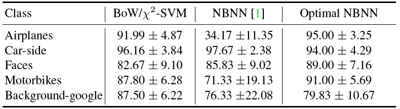
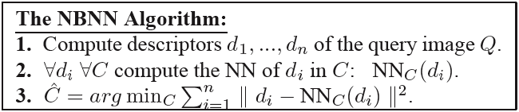

This page outlines my attempt to reproduce the results of Behmo et al.'s paper, 'Towards Optimal Naive Bayes Nearest Neighbor'.
Behmo et al. presented the following results in their paper:
This suggested that the original NBNN method performed poorly when run on this 5 class subset of the Caltech 101 dataset. When I attempted to reproduce these poor results using the code in experiment_7 below, I was unable to produce result that were as poor as they reported. I got the following results:
c101_BACKGROUND_Google: 0.859259 ± 0.091325 c101_Faces: 0.907407 ± 0.067179 c101_car_side: 0.992593 ± 0.020951 c101_airplanes: 0.703704 ± 0.124171 c101_Motorbikes: 0.877778 ± 0.102439 Overall: 0.868148 ± 0.094065
After email discussion with Behmo, I discovered they did not implement the original NBNN method:
Instead, they implemented individual, class-specific, binary classifiers for this experiment (despite never mentioning "binary" in their paper).
Behmo confirmed with me that the following is their approach to produce the number in the Airplanes row, NBNN column, above (34.17 +- 11.35):
So, they were not comparing against NBNN. They were comparing against their NBNN-based binary classifier. NBNN performs much better and actually very close to their Optimal NBNN correction that they apply to their binary classifier.
With this new information, I implemented the method as Behmo described above. It's available below as experiment_8. I got the following results:
c101_BACKGROUND_Google: 0.088889 ± 0.073703 c101_Faces: 0.633333 ± 0.107152 c101_car_side: 0.085185 ± 0.079522 c101_airplanes: 0.111111 ± 0.070273 c101_Motorbikes: 0.170370 ± 0.102372 Overall: 0.217778 ± 0.210002
This was quite worse than the results published in the paper. However, the testing methodology described above, in which they just test the recall rate on the positive class, seems doubtful. More likely, they tested on a 50/50 mix of positive and negative examples, reporting the overall classification rate. To check this, we follow the above procedure, except we test on 30 random images from the positive class along with 30 random images from the four other classes (totally 60 images, 30 positive, 30 negative). Doing this experiment gives the following results:
c101_BACKGROUND_Google: 0.562319 ± 0.046422 c101_Faces: 0.805797 ± 0.050745 c101_car_side: 0.569565 ± 0.036664 c101_airplanes: 0.569565 ± 0.043863 c101_Motorbikes: 0.605797 ± 0.050745 Overall: 0.622609 ± 0.092847
Behmo introduce a complicated optimization procedure to correct for the fact that the negative/positive balance in the training set does not match the negative/positive balance in the testing set. Instead, we try something much simpler: for the distance from a test descriptor to the background class, average over the nearest few neighbors rather than using the distance to the single nearest neighbor. This gives the following results:
c101_BACKGROUND_Google: 0.928000 ± 0.054715 c101_Faces: 0.962667 ± 0.033092 c101_car_side: 0.976000 ± 0.027520 c101_airplanes: 0.849333 ± 0.068065 c101_Motorbikes: 0.949333 ± 0.037854 Overall: 0.933067 ± 0.044768
This actually is better than the optimal NBNN results that Behmo reported on this dataset.
The 5-class Caltech 101 subset: onbnn-data.tgz
This contains the resized images, the extraction program that Behmo et al. used to extract their data, and one example ASCII descriptor file per class for comparison. You can extract the descriptors for the images in one of the folders by running the command 'ruby sample_keypoints.rb [folder]'. The extracted descriptors are the input for the following experiments.
The original NBNN method: experiment_7.tgz
Behmo et al's version of the original NBNN method: experiment_8.tgz